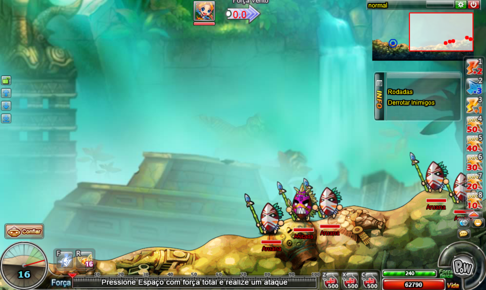
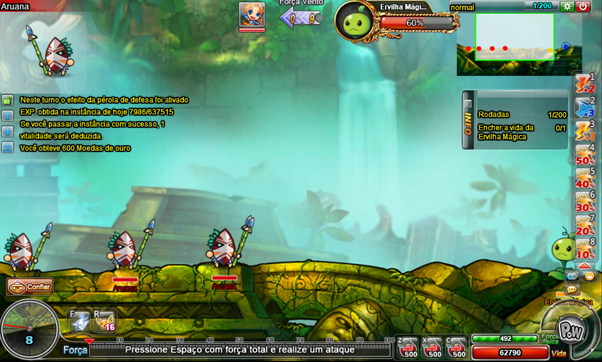
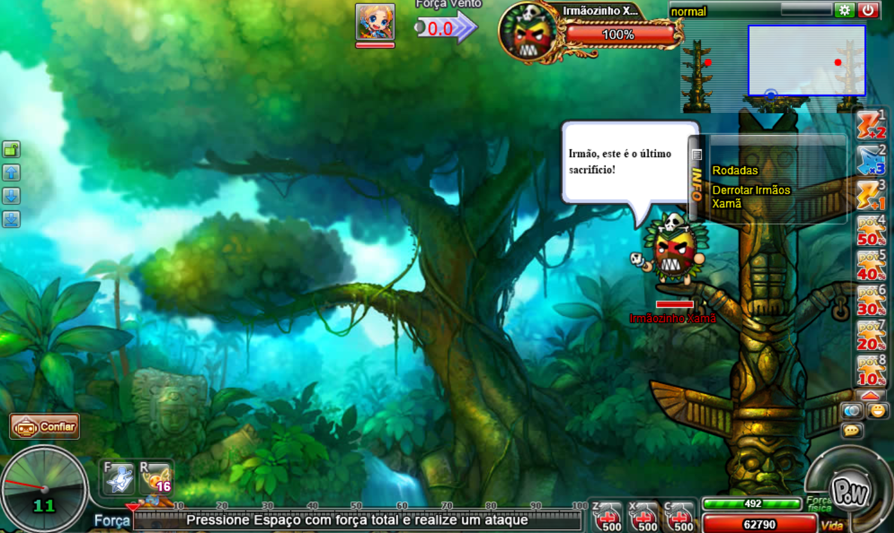
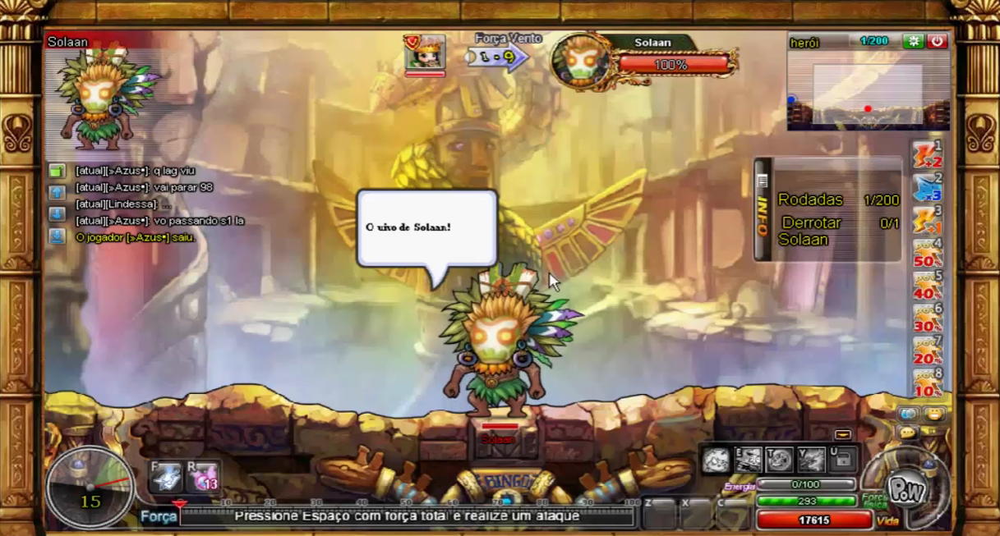
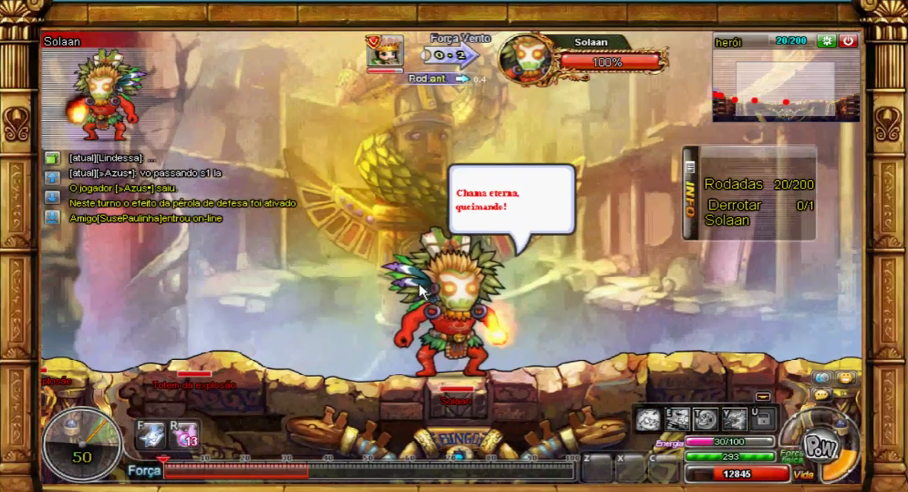

A instância tribo piatan é uma das mais complicadas de se passar, nela você enfrentará uma tribo e conforme passa os estágio, os inimigos ficam cada vez mais difíceis.
A tribo piatan possue as dificuldades: normal, difícil e heróica.
Aqui todas as dificuldades possuem a mesma quantidade de estágios, indo do 1 ao 4.

No estágio 1 você enfrentará os soldados da tribo, derrote-os para avançar ao estágio 2.

No estágio 2 o objetivo é curar a ervilha mágica utilizando o item auxiliar "dom", enquanto os soldados tentam te impedir, atacando-a e drenando sua vida.
Faça com que a vida da ervilha mágica chegue em 100% para avançar ao próximo estágio.
Aqui o recomendado é passar em grupos de mais pessoas, enquanto 1 fica na frente da ervilha, tankando os soldados corpo a corpo e matando o soldado a distâncias, o restante do grupo cura a ervilha.

No estágio 3 você enfrentará 2 irmãos xamãs o que a princípio parece simples, porém esse estágio possue um detalhe importante:
Ao matar 1 dos irmãos, o outro revive o irmão morto. Portanto você e sua equipe deverá montar uma estratégia para matar ambos na mesma rodada, sendo OBRIGATÓRIO passar esse estágio com no mínimo 2 pessoas.
Derrote ambos os irmãos para avançar ao próximo estágio.
No estágio 4 você enfrentará Solaan, o líder da tribo, o qual possue 2 fases:

Na fase 1 Solaan possue a fisionomia da imagem e seus ataques são mais fracos, derrote-o para avançar para fase 2.

Após derrotar Solaan em sua primeira fase ele se enfurece e fica com a aparência avermelhada. Aqui, seus ataques são extremamente fortes e podem causar queimação.
Nessa fase, a ervilha que salvamos no estágio 2 aparece para ajudar, fique próximo a ela e você receberá uma cura constante a cada rodada.
Após derrotar Solaan, parabéns! Você terá completado a instância tribo piatan.